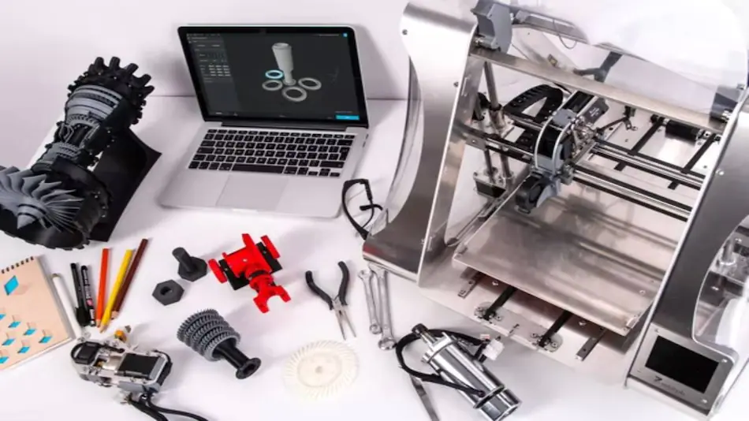

Indigenous Metal 3D Printer for Defence, Aerospace Applications Developed by IIT Jodhpur
Researchers at the Indian Institute of Technology (IIT), Jodhpur, have indigenously developed a metal 3D printer for aerospace, defence and general engineering applications.
According to officials, all the components of the metal 3D printer, except the laser and robot systems, are designed and manufactured in India.The project's main objective is to reduce the cost of metal 3D printers and attract a broader range of users, they said.
Despite the fact that metal 3D printing technology started a few years after the launch of Polymer 3D printing, it is yet to experience the tremendous growth that the polymer 3D industry has achieved, especially in India.
What people think?
V Narayanan, Associate Professor, Department of Physics, who is also member of the team said, this machine can print 3D parts with metal powders made in India. "In addition, India's first state-of-the-art variable spot size laser optics without compromising on laser beam homogeneity for laser cladding and additive manufacturing process is available in this machine.
"Our team has developed this machine's tool path planning software and coaxial nozzle. It also has in-situ monitoring technologies which constantly monitor the melt pool temperature and clad thickness during the additive manufacturing process," he said.
NASA’s Perseverance Discovers Mysterious “Piece Of Thermal Blanket” On Mars
NASA's Perseverance Mars rover has just come across a “shiny bit of foil” stuck in the rock crevices of the Red Planet. The rover, which was sent to the planet to discover signs of past life, has served us with a photo of the mysterious object. The Perseverance team believes it knows what this material may be. The shiny material stuck in the rocks can be a piece of a thermal blanket that may have come from the descent stage when the rocket was landing on Mars in 2021. What's interesting is that the descent stage crashed 2 km away from the planet's surface.
NASA's Perseverance team has dropped several photos and tweets. In the first post in the Twitter thread, we see the material being talked about.
My team has spotted something unexpected !
The caption read, "My team has spotted something unexpected: It's a piece of a thermal blanket that they think may have come from my descent stage, the rocket-powered jet pack that set me down on landing day back in 2021.”
The descent stage, to which this piece is believed to belong, had crashed 2 km away on the planet. So, did this piece drop here or was blown here by the winds? The post read, “That shiny bit of foil is part of a thermal blanket – a material used to control temperatures. It's a surprise finding this here: My descent stage crashed about 2 km away. Did this piece land here after that, or was it blown here by the wind?”
The team has also shared a photo from the time when these thermal blankets were being wrapped around Perseverance. The caption read, “Here's part of the team at JPL that wrapped me up in thermal blankets. Think of them as spacecraft dressmakers. They work with sewing machines and other tools to piece together these unique materials.”
Some more cool science news, you may find interesting